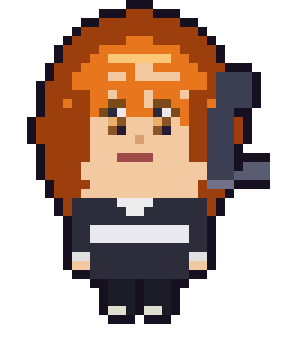

Fixed reference sprites + idle animation (preview, not on main)
Ichigo - corner chunk removed

Ichigo hollow - stray figure removed

Rukia - rock removed

Rukia bankai

Frieren (unchanged)

Gojo - chibi (hands in pockets)

Kaido (unchanged)

All together